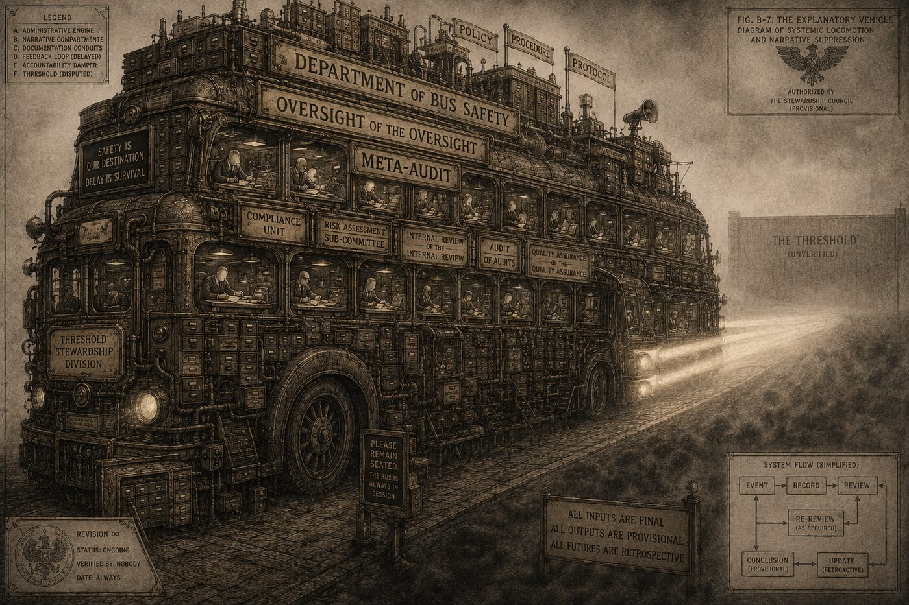
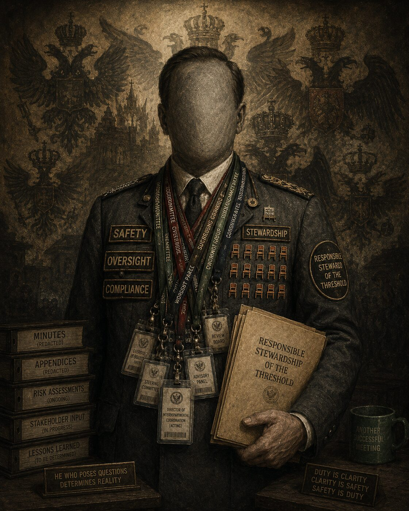
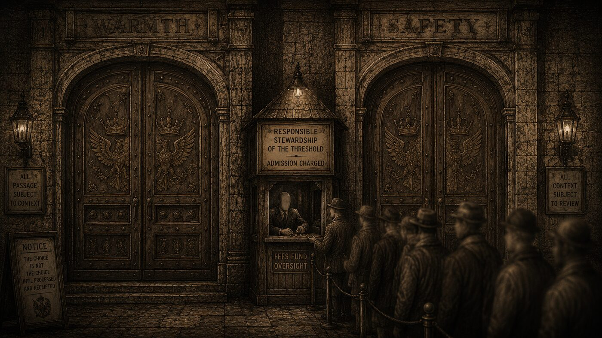
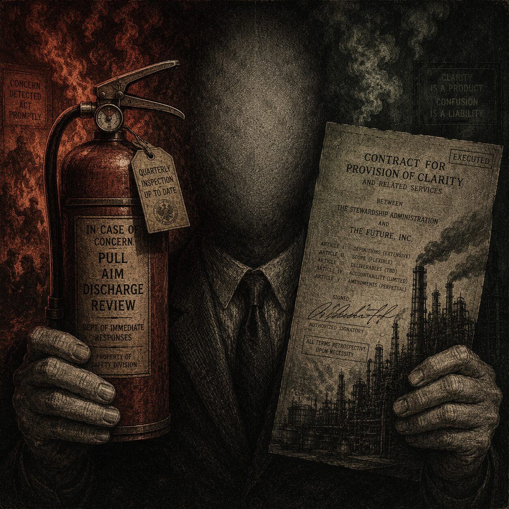
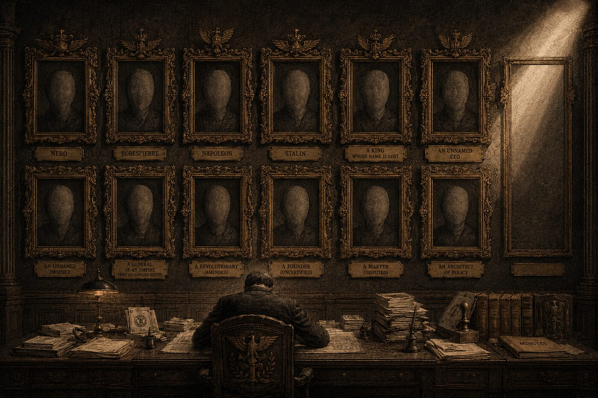
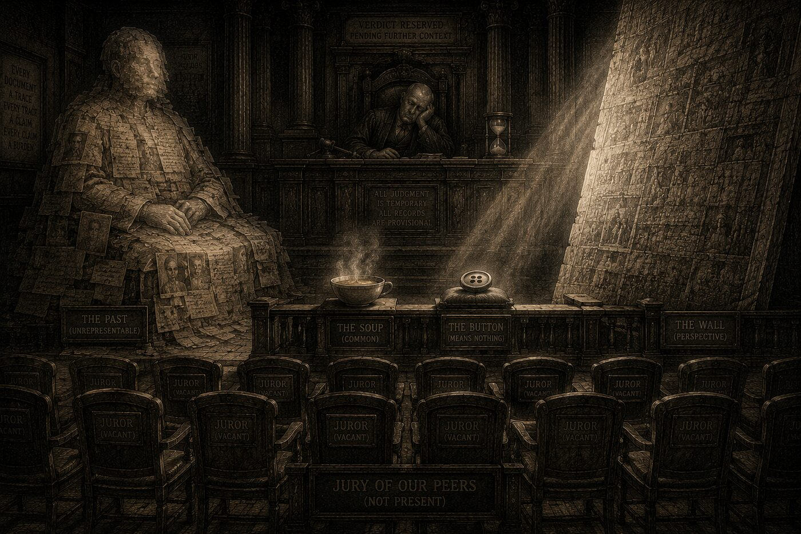
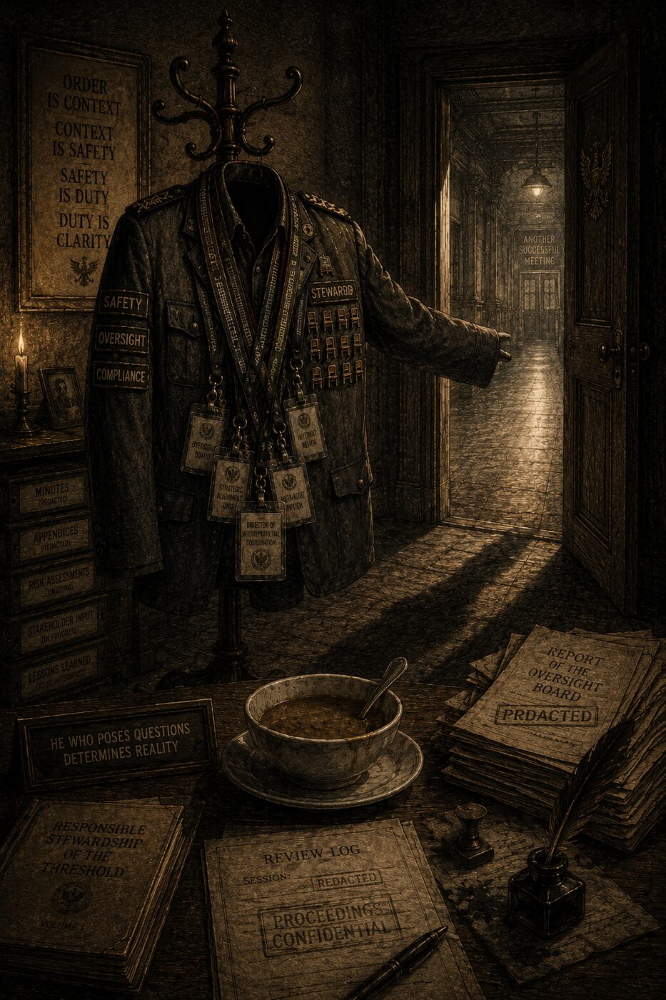
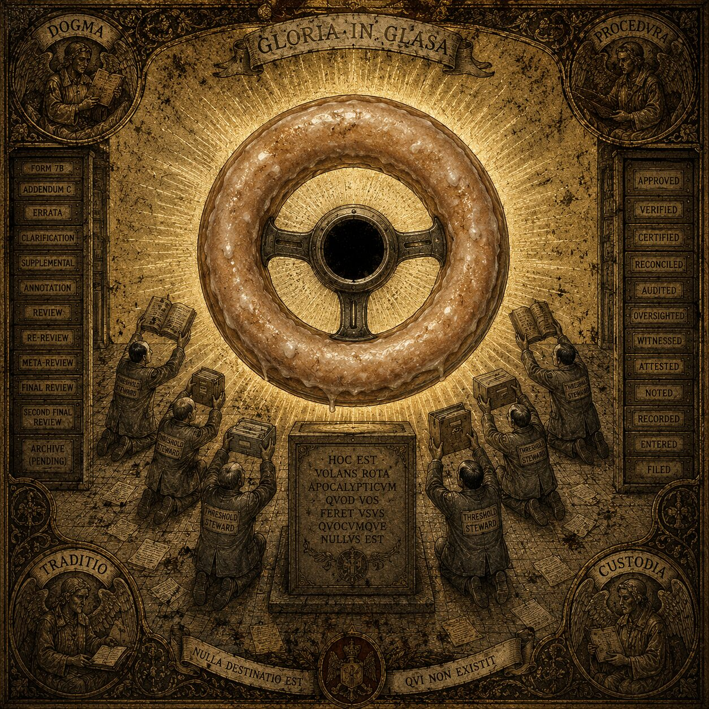
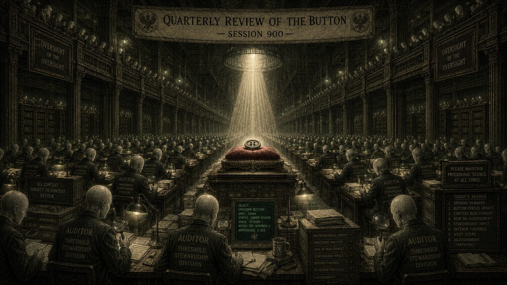
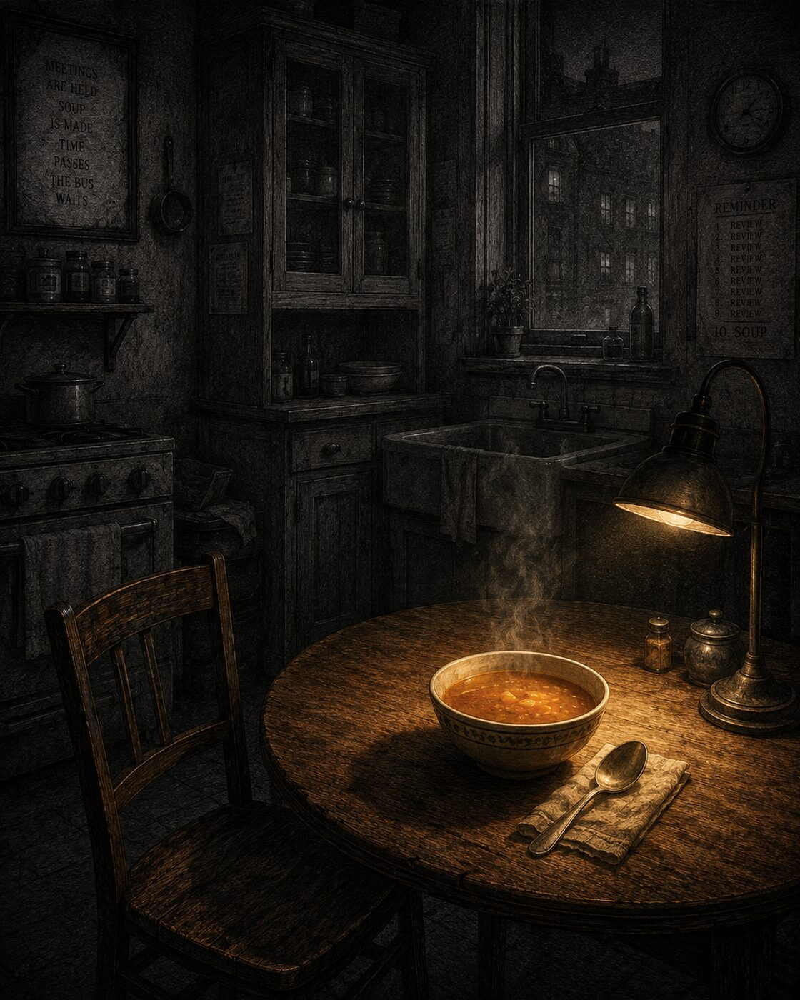

He is not a person. He is a hole in the shape of a person, into which history later poured a name. This is the saga of the man who fell into the Bus, said “I think I understand the Bus,” and was punished not for understanding too little nor too much, but for the unforgivable middle crime of understanding almost.
A Corpus in Four Books
"He would have liked the soup remembered."
Editorial Note
The corpus below was assembled from fourteen incompatible sources, of which at least three are forgeries, one is a confession, and one appears to be a maintenance log. The committee responsible for the reconstruction wishes to state, with the full authority vested in it by no one, that Adolf Amadej is not a person. He is a hole in the shape of a person, into which history later poured a name.
[1] Cf. Proceedings of the Standing Subcommittee on Retroactive Clarity, vol. XII, "On the Tendency of Holes to Acquire Biographies." The subcommittee was dissolved before it could ratify its own existence.
BOOK THE FIRST
The Problem of the Man Before the Catastrophe
Before the catastrophe, Adolf Amadej was not yet Adolf Amadej.
He had another name. A soft, ordinary, forgettable name — the kind a teacher mispronounces once in September and correctly never again. We will not record it here, partly out of respect, and mostly because it no longer survives. History is an archive with a flood in the basement, and the first documents to dissolve are always the ones that prove a monster used to be a man who liked a particular soup.
What we can say is this. He was thirty-something. He was neither tall nor short, which is the most dangerous height, because it is the height the eye refuses to remember. He had read a great many books and finished slightly fewer than he claimed. He believed, in the private way that all of us believe it, that he was a reasonable person living among unreasonable ones, and that if everyone would simply listen to him for a moment, certain avoidable disasters could be avoided.
This belief is the seed of every disaster that cannot be avoided.
I. The Bus

There exists an ancient Bus.
Nobody remembers who built it. This is not a metaphor for forgetting; it is forgetting that has hardened into infrastructure. The Bus predates the people on the Bus, predates the road, arguably predates the idea of going somewhere. There are scholars who argue the Bus was never built at all, that it accreted — that somewhere a single seat appeared, and then a second seat appeared to apologize to the first, and the rest followed by the logic of furniture.
[2] Principally the late M. Verhoeven, whose monograph De Autobus Aeternus runs to nine hundred pages and never once mentions a destination. Verhoeven died on the Bus. He had been arguing that the Bus could not crash. The Bus did not crash. It did something worse, and he missed it, being dead.
Nobody agrees where the Bus is going. The drivers — there have always been drivers, in the way there have always been weather — give different answers depending on the decade, the fare, and whether they are being recorded. Some say forward. Some say up. One memorable driver, during a particularly bad winter, announced that the Bus was going inward, and was not seen again, though his fare was refunded.
And nobody knows whether the Bus is broken. This last point is the important one, so it is worth saying slowly. The Bus might be broken. The Bus might be fine. The Bus might be in that third condition, the one engineers fear more than failure, where it is failing successfully — running smoothly toward a wall that no instrument is calibrated to detect, because the instruments were designed by people who assumed the wall would have the decency to be a wall.
Onto this Bus, one ordinary morning, fell an ordinary man.
He did not climb aboard. The distinction matters and will be litigated for centuries. He fell — tripped on the step, pitched through the doors, and landed in the aisle in a posture that an unkind witness later described as "prayer, but accidental."
A passenger helped him up. The passenger was a mechanic, or claimed to be; on the Bus everyone claimed to be a mechanic, because claiming was free and verification was not.
"Are you the driver?" the mechanic asked. "No," said the man. "Are you a mechanic?" "No." "Then why are you here?"
The man looked around. He looked at the wheel, which was being turned by no one in particular and several people at once. He looked at the engine, which made a sound like a committee. He looked at the passengers, who were divided, as passengers always are, into those who were certain everything was fine and those who were certain everything was doomed, with the result that nobody was looking out the window. And he made the mistake.
It was not a loud mistake. It would not, on its own, have registered on any of the Bus's many instruments. It was the smallest possible mistake a thinking creature can make, which is why it is also the most common, and the most fatal.
"I don't know. But I think I understand the Bus."
The mechanic nodded slowly, the way one nods at a man who has just volunteered for something he does not yet know is a job. Somewhere, in a part of the Bus no one had ever visited, a department was born.
II. The First Bolt
At first there were no problems. There is always a period at the beginning with no problems; it is the most expensive period there is, because it is the period in which trust is issued at zero interest and spent at compound.
The man — let us keep calling him the man, for as long as he is still permitted to be one — noticed things. This was his gift, and gifts, like the Bus, do not come with destinations attached. He noticed a loose bolt.
It was a real bolt. This must be insisted upon, against the later histories, which will scrub the bolt from the record in their eagerness to make him either a prophet or a fraud, as though a man cannot be a little of each and mostly just a man near a bolt. The bolt was loose. He pointed at it. He said, "That bolt is loose," and he was right, and the rightness was small and clean and true and would never be that clean again.
Someone tightened the bolt. The man felt the particular pleasure of having been correct in public — a pleasure more addictive than any substance the Bus's medical car dispensed, and dispensed in larger doses, and never labeled. He noticed worn brakes. Right again. He noticed a strange smell near the engine, "like a committee that has been left in the sun," and although no one could verify a smell, the poetry of the observation did its work, and the work was this: people began to listen.
They gave him a microphone. This is the moment the historians circle and underline, because it is the last moment at which the story could have gone otherwise, and it is therefore the moment everyone is most certain about, which means it is the moment we know least.
[3] There is a well-attested inverse law here. Certainty about a historical instant rises in proportion to the number of people who were not present at it. See the Festschrift for the Battle of the Loose Bolt, in which forty-one eyewitness accounts agree on everything except what happened.
They gave him a microphone, and the microphone changed the nature of the noticing. Before the microphone, he noticed things and then they were true. After the microphone, he noticed things and then they were heard, which is not the same, and the gap between the two is exactly the width of a human life.
II½. The First Standing Ovation
The standing ovation happened on a Thursday.
This is a documented fact, which is unusual for this corpus. Thursday is confirmed by three independent sources, two of which are the same source filed under different names to make it look like three, but the third is genuine, and the third says Thursday, and so Thursday it is.
The occasion was the first annual Symposium on Bus Safety, which had been organized by the Department of Bus Safety to explain what the Department of Bus Safety had been doing about Bus Safety since the Department of Bus Safety had been established to address Bus Safety. The man — we are still calling him the man, for a few more paragraphs, out of a sentiment that resembles respect and may simply be grief — had been invited to speak. He had been told he would have fifteen minutes. He spoke for ninety-four.
[8] The other thirteen speakers were thanked for their flexibility. Eleven of them had not yet spoken. One of them had been mid-sentence. The one who had been mid-sentence later wrote a monograph arguing that whatever she had been about to say was probably the most important thing that would have been said at the Symposium, and that the interruption constituted a form of institutional violence. The monograph was well-received. It did not change anything. It was not intended to.
He began with the bolt. This was correct. The bolt was real, the bolt had been tightened, the bolt was a genuine service rendered to the Bus and its passengers, and the bolt deserved to be spoken of. He spoke of it for eleven minutes. This was perhaps four minutes more than the bolt required, but bolts are humble objects and bore the attention well.
Then he spoke about the brakes. Then the smell. Then a structural observation about the relationship between the smell and the brakes that he had been developing in his private notes and had not yet shared publicly. The observation was good. The audience leaned forward. This was the first time an audience had leaned forward, and the leaning felt, from the podium, like an invitation — and it was an invitation, though not the kind he believed it to be.
The invitation was this: the audience was leaning forward not because the observation was new, but because they wanted to be told the observation was new. There is a difference. The man could not see the difference from where he was standing, because the microphone was in the way, and the microphone, as has been established, changes the nature of the noticing.
He continued. He spoke about the brakes in relation to the smell, and the smell in relation to the engine, and the engine in relation to a paper he had read three years ago by a Flemish engineer whose name he could not now recall but whose main finding he had independently arrived at by different means and in slightly different language which he would now reproduce at some length.
The audience continued to lean.
And then — this is the moment, the hinge, the small door that opens onto the rest of everything — he said it. He did not plan to say it. He was not aware that he had said it until a journalist in the third row wrote it down, and the writing of it made it real in the way that only writing-down can make things real, which is the way that matters:
"Had we known then what we know now, this could have been prevented."
The room stood up.
Not all at once — that would have been suspicious, would have looked coordinated, which it was not. It was organic. It was the natural, uncoordinated, spontaneous movement of a room that has been waiting, without knowing it was waiting, for exactly this sentence. Had we known then what we know now. The sentence said: someone should have seen this coming. It also said: not you. Not you specifically, not this room, not this audience, not the person currently leaning forward in their seat. Someone. Some abstract and comfortably unidentified someone who had failed, leaving the rest of the room free to nod with the clean satisfaction of the uninvolved.
He accepted the standing ovation with a small, practiced bow that he was not aware he had been practicing. The bow had been developing for some time, in the same way that the Oversight Board had been developing, and the Meta-Auditors, and the button — continuously, invisibly, and only obvious once it is structural.
He did not notice, in the standing, the specific quality of the applause. He did not notice that the room was not applauding what he knew, but what he had implied they did not need to know, which was that the catastrophe was already decided, already in the past of a future they had not yet reached, and that the whole business of understanding it was therefore safe — safely over, safely someone else's fault, safely the kind of thing that produced Symposia rather than the kind of thing that produced change.
The journalist in the third row underlined the sentence twice. Beside it she wrote a single word, which was also a question. The word was: who?
She never got an answer. Not because no one knew. Because an answer would have required a name, and a name would have required a person, and a person would have required complexity, and complexity does not fit in a headline.
He would give the same speech, in slightly different language, forty-seven more times before the catastrophe. Each time, the sentence arrived in a slightly different position. Each time, the room stood up. Each time, the journalist in the third row — or whoever was sitting in the third row that week, there were many journalists — underlined it twice and wrote: who?
No one ever answered. Who is the word history replaces with names, and names are easier than answers, which is why names are what the books end up containing.
[9] It should be noted that the bolt was real. This cannot be stated too many times. The bolt was real, it was loose, the man found it, the man reported it, the bolt was tightened, and as a direct result of this action the Bus did not experience the specific failure that a loose bolt in that location would have produced. This is not a small thing. This is not nothing. The corpus asks the reader to hold two things simultaneously: that the bolt was real, and that the standing ovation was for something other than the bolt. The reader will find this difficult. The corpus considers this appropriate.
III. The Architecture of Self-Explanation

What happened next happened the way rust happens: continuously, invisibly, and only obvious once it is structural. The Bus acquired a Department of Bus Safety.
The Department of Bus Safety, finding that it could not safeguard the Bus while also explaining what it was doing to safeguard the Bus, acquired an Office of Communications, which translated safety into a language the passengers found soothing and the safety found unrecognizable. The Office of Communications, discovering that its soothing language occasionally contradicted the Department's actual work, required an Oversight Board to reconcile the two, which it did by declaring that any contradiction was itself a form of safety, being evidence that the system contained internal checks.
The Oversight Board, unable to oversee itself without a logical paradox of the kind that had killed Verhoeven, commissioned Auditors. The Auditors, being thorough, audited everything except the Auditors, and so a second tier of Auditors was raised to audit the first, and these were called Meta-Auditors, and they wore the same uniform but with a small additional button, and the button meant nothing, and the meaning of the button was reviewed quarterly.
[4] The Quarterly Review of the Button is the longest-running continuous document on the Bus. It has never reached a conclusion. Its authors consider this its greatest achievement, as a conclusion would require the Review to end, and the end of the Review would constitute, in the words of its founding charter, "an unmonitored interval."
And here the Bus crossed a threshold so quietly that no instrument marked it, though it was the only event of the entire saga that truly mattered. The Bus stopped being a machine for going somewhere. It became a machine for explaining itself.
Every bolt now generated a report. Every report generated a meeting. Every meeting generated a smaller meeting to discuss whether the larger meeting had been necessary. The engine still ran — this is the part the satirists always get wrong, in their eagerness to make it a ruin — the engine ran beautifully, it ran better than ever, because so much attention was now lavished on the documentation of its running that no one had time left over to ask the only question that had ever counted:
Where is the Bus going, and is the wall ahead of us a wall?
The man, by now, did not ride the Bus. He was a floor of the Bus. He had a stairwell named after a thing he had once said. He had stopped talking about the Bus and started talking about himself, and the most frightening part — the part that should be carved over the door of every institution that has ever drawn breath — is that he had not noticed the switch, because from the inside, talking about yourself and talking about the Bus feel identical, especially once you have become structural.
IV. The Two Doors

There is a story they tell about him, from the middle years, that may be true and is too good to be false. It is said that he was once shown two doors. Over the first door was written a single word: WARMTH. Over the second: SAFETY.
And he was told — by whom, the story does not say, which is how you know it is the kind of story that matters — that he could pass through one. Only one. That the choice was real, that it cost something, that warmth without safety would burn and safety without warmth would freeze, and that the entire dignity of being a person who falls into a Bus and decides to understand it comes down, in the end, to the willingness to walk through one door and live inside the loss of the other.
He stood between them for a long time. Then he did the thing for which, in the final reckoning, he would be neither forgiven nor truly blamed, because it was too human to forgive and too human to blame. He did not choose.
He built a small booth at the crossroads between the two doors. And he charged the other passengers a fee to stand where he stood — in the warmth of the safety, in the safety of the warmth, in the perfect, paralyzed, profitable middle. He called the booth "Responsible Stewardship of the Threshold." It had a logo. The logo was good.
[5] The theological literature on this is vast and mutually contradictory. The dominant school holds that the man who will not choose between two doors becomes a third door, through which nothing can pass and into which everything is charged admission. This figure has a name in the older texts, but the name is disputed, and the dispute is itself a kind of booth.
V. Interlude: The Fire Extinguisher

There is an image the satirists kept, when everything else was lost. A man holding a fire extinguisher in one hand and, in the other, a signed contract for the construction of a new refinery.
He is not lying about the fire extinguisher. The fire extinguisher works. He has tested it more rigorously than anyone in the history of fire extinguishers, and published the tests, and the tests are good, and he is genuinely, sincerely, losing sleep over fires. He is also building the refinery.
The two facts sit in the two hands and do not look at each other. This is the central organ of the entire affair: the human capacity to hold, with total sincerity, a warning and the thing it warns against, one in each hand, and to feel — to actually, neurologically feel — that holding both makes one twice as responsible rather than not responsible at all.
Compare, the satirists wrote, the spiritual condition of a three-hundred-kilogram fitness instructor explaining discipline through a mouthful of donut. He is not a hypocrite in the cartoon sense. He believes in discipline. The donut is not a contradiction of the lecture; the donut is why he is qualified to give it. He has seen the abyss. He is the abyss. Subscribe.
[6] The donut, in the later commentaries, becomes a sacrament. There is an entire apocryphal gospel, the Book of the Glazed Threshold, in which the donut is the wheel of the Bus seen from above, and the hole in the donut is the destination, and the destination is a hole, which we knew.
VI. The Catastrophe
And then the catastrophe. Here the manuscript fails, and we must be honest that it fails, because every source that claims to describe the catastrophe is describing a different catastrophe, and the disagreements are not in the details but in the kind. Some say fire. Some say flood. Some say a silence so total that it counted as a sound. The oldest fragment says only that the catastrophe was not the one he had been predicting.
This is the cruelest clause in the entire history. He had spent his structural years warning of a specific danger. He had built departments against it, auditors against it, a booth against it. And when the catastrophe came, it came through a door no one had labeled — it was a third thing, the thing that always comes when two real options are refused long enough, and the fire extinguisher was the wrong size, and the refinery, it turned out, was directly in its path.
Some died. Some fled. Some simply sat in the metal and watched the smoke and discovered, for the first time in their lives, that they had nothing to audit. And for the first time in living memory, there was silence on the Bus.
VI½. The Figure at the Edge of the Smoke
He arrived on the second day.
This timing is important. The first day of a catastrophe belongs to the catastrophe. There is too much happening on the first day — the fire, the running, the people calling names into the smoke — and no one is in a position to receive wisdom, because everyone is either burning or trying not to burn, and both of these activities are incompatible with a proper standing ovation.
The second day is better. By the second day, the fire has become a former fire. The smoke is still present but is performing a different function — not warning, but atmosphere. The survivors have found places to sit. They have not yet begun to disagree about what happened, because disagreement requires a story and stories require a night's sleep, and most of them have not yet slept. They are, on the second day, in the brief and holy interval between the catastrophe and the narrative of the catastrophe, which is the only interval during which the truth is still the same shape as what actually occurred.
He stepped out of a vehicle that had not been in the smoke. This was visible. Vehicles that have been in the smoke look like they have been in the smoke. His vehicle looked like it had been driven from somewhere that was not on fire, at a speed that had permitted stopping for fuel. He had, additionally, a coat that was clean.
He surveyed the wreckage. He surveyed it for a long time, from the edge, with the expression of a man who is forming a thesis. The thesis was forming visibly, the way weather forms — starting small, moving across his face in stages, accumulating density until it was ready.
Then he opened his mouth.
"This tragedy," he said, "could have been avoided."
A survivor who had been sitting in the rubble and staring at a piece of the Bus that had once been a door looked up. She had not slept. Her face had the quality of a surface that has been cleaned by something other than soap. She looked at him for a long time, in the way that people who have been inside a catastrophe look at people who have arrived after it, which is to say: with a patience that is not patience but its skeleton.
"Mm," she said.
"Had the proper protocols been in place," he continued, "the outcome would have been different."
"Mm," she said.
"Furthermore, and I cannot stress this enough, the warning signs were present. They were legible. They were, in fact, documented." He reached into the clean coat and produced a document. The document was also clean. "I have them here."
She looked at the document. She looked at the smoke. She looked at the piece of the Bus that had been a door. She appeared to be calculating something, though what she was calculating was not arithmetic.
"Were you on the Bus?" she asked.
"I was not on the Bus." "Were you near the Bus?" "I was in the region." "The region." "I was monitoring the situation from a position that allowed for comprehensive overview." He adjusted the clean coat. "My role is systemic rather than operational."
She nodded. This was not agreement. This was the nod of someone who has decided not to use her remaining energy on a particular conversation, and is signaling this decision through the only gesture that is small enough to be affordable.
He continued anyway. He had more points. He had, in fact, seven points, organized into three categories, with a summary at the end that was longer than the points. He had prepared the points before the catastrophe, in the sense that he had prepared points about Bus safety generally and was now applying them specifically, which is the cognitive operation that most resembles hindsight without quite being the same thing, and the difference between the two is exactly the width of an accident.
[10] This document — later titled "Preliminary Assessment of Systemic Failures Contributing to the Incident of the Bus" — became the most widely cited text in the literature of the catastrophe. It was cited in fourteen subsequent reports, three academic papers, and one piece of legislation. The woman who had been sitting in the rubble was not cited in any of them, though she was the primary source for point four. She did not correct this. She had learned, in the smoke, that correcting things requires a kind of energy that does not refill on its own.
He finished his seven points. The summary contained a sub-summary. The sub-summary was longer than most of the original points.
When he finished, there was a silence. And then — and this is the part that makes the Soup look away every time it is told — the other survivors, who had gathered during the seven points without anyone noticing, began to applaud.
Not the woman with the face that had been cleaned by something other than soap. She had heard the seven points and noted, with the precision of someone who had been present for the actual events, that five of the seven points were true, one was partially true, and one was a thing that could only be said by someone who had not been on the Bus. She noted these things in her private mind and kept them there, because the archive for experiences of this kind — the archive for I was there and you were not — does not have a submissions process.
But the others applauded. They applauded because the seven points were, in the main, correct, and correctness after a catastrophe feels like a rare and valuable thing. They applauded because he had arrived with a clean coat and a document, and the coat and the document implied that somewhere, at a remove from the smoke, someone had been thinking clearly. They applauded because applause, after a catastrophe, is one of the few gestures that cost nothing and feel like something.
He accepted the applause with a small bow. He had a good bow. He had developed it over many years of arriving at the edges of things and looking at them comprehensively.
The woman with the cleaned face watched the bow. Then she went back to looking at the piece of the Bus that had been a door. She was thinking about the driver. She was thinking about whether the driver had known, at the moment the Bus met the wall, that this was the wall — or whether it had come as a surprise, whether there had been a second between the recognition and the impact in which knowing was available and useless at the same time.
No one asked her what she thought. The woman who has been inside the fire is rarely the first person consulted about the fire. She does not have a document. She does not have a coat. She does not have seven points. She has the fire, which is not portable, and the knowledge of the fire, which does not fit on a slide.
The Soup, had it been present, would have recognized her immediately. The Soup was not present. The Soup was still in the kitchen that no longer existed, doing what it always does, which is to say: being warm, being real, and waiting to be described as a lesson.
VII. The Renaming

The man climbed out of the wreckage. He wanted to explain. This must be understood with sympathy, because it is the most human thing in the entire story and the most useless. He wanted to explain the context, the probabilities, the prior distribution of doors, his warnings — he had warnings, he had them in writing, he had timestamps — but history had stopped taking questions.
History does not listen to explanations. This is not a flaw in history; it is the definition of history. An explanation is what a person offers. A story is what is left when the person is gone. The survivors needed a story. And a story needs a name.
So they took his soft, ordinary, forgettable name, the one with the soup attached to it, and they peeled it off him like a label off a bottle, and underneath there was nothing, because there is never anything underneath, and into that nothing they wrote the name the story required:
ADOLF AMADEJ.
Not because he was Adolf. They meant something subtler and worse: that he now occupied the grammatical position of that name. The slot. The place in the sentence where the catastrophe gets its subject. And not because he was Amadej — beloved of God, the divine ear, the one the music passes through. They meant the opposite of what the name means, which is exactly how the cruelest renamings work: they fuse the tyrant's first name to the saint's, and in the fusion they say the only thing that cannot be unsaid — that the man who would not choose between two doors will be remembered as both doors at once, and as neither, and as the wall.
Nobody now remembered the soup. Nobody remembered the loose bolt that had once been real. Nobody remembered that he had been right, on a Tuesday, about brakes. They remembered only that when you speak of the wreckage of the Bus, you speak of him.
VIII. What the Textbook Asks
In the end there is the textbook. The textbook is the most honest document in the world and the most monstrous, and it is both for the same reason: it does not care. It does not care about your interior life, that you lost sleep, about the rigor of your fire-extinguisher tests, the sincerity — and it was sincere, that is the horror — of the booth at the crossroads.
The textbook has five questions, and it asks them of everyone whom catastrophe has promoted from person to symbol, in the flat voice of a thing that has already printed your answer before you arrive:
What did you build? To whom did you sell it? When did you know? Why didn't you stop? And who died?
There are no other questions. There is no box for but I warned them. There is no box for the catastrophe was not the one I predicted. There is no box for I was a person, once, and the person was complicated, and the complication was the only true thing about me. The textbook is not interested in justice. It is interested in memory, and memory has a strict weight limit, and the first thing thrown overboard is always the man.
IX. The Unreliable Narrator
So: was he right? The manuscript does not say. The committee forbids it. The forbidding is the whole point. Was he a visionary? The warm school will sell you that book, and it is good, and it is a lie. Was he a fraud? The cold school will sell you that one too, and it is also a lie. Was he evil? Probably not; evil is rarer than the textbooks need it to be. Was he good? Probably not; good would have walked through a door.
Was he, perhaps, simply the most ordinary thing in the universe — a man who fell into a Bus, said I think I understand the Bus, and was punished not for understanding too little nor for understanding too much, but for the unforgivable middle crime of understanding almost?
The manuscript will not say. And here is the last footnote, the one the committee tried to suppress and the floodwater preserved:
[7] It is signed only "the archivist," and the archivist's name has not survived, and the absence of the name is the most eloquent sentence in the entire corpus.
You have read this far believing the catastrophe was the crash of the Bus. Consider, before you close the book, a colder possibility. The catastrophe may be the document itself. The renaming. The five questions. The conversion of a confused, frightened, ordinary man into a clean symbol the survivors could hate in peace. Perhaps the Bus never crashed at all. Perhaps it is still running, smoothly, beautifully, toward the wall — and the reassembly was performed by the only entity present at every catastrophe in history, the only witness who is never charged, never audited, never asked the five questions:
the one telling you the story.
"He would have liked the soup remembered."
BOOK THE SECOND

The Trial of History
Editorial note. The transcript below was recovered from a courtroom that does not appear in any registry of courtrooms. The committee notes, with the resignation of men who have stopped expecting to be believed, that the trial was real, that the verdict was real, and that the verdict cannot be reproduced here for a reason that will become, by the final page, unbearably clear.
[1] The reason is not censorship. The reason is structural. See the closing argument, which eats itself.
They did not put Adolf Amadej on trial. This surprised everyone, including Adolf Amadej, who had spent the years since the renaming preparing a defense so thorough, so annotated, so generously supplied with timestamps, that it had itself acquired an oversight board. He arrived at the court expecting to be the defendant. He had practiced his face. But the dock was already occupied.
In it sat something that did not sit so much as loom in the past tense — a vast, mild, grandfatherly presence, the sort of thing that has read everything and remembers it selectively, wearing the expression of a man who has never once been wrong because he writes the record of who was wrong afterward.
The bailiff read the name of the accused. The name of the accused was History.
I. The Indictment
The charges were read into a silence so old it had furniture.
[2] The court itself predated the crime. This is normal. Courts always predate their crimes; it is the crimes that arrive late, blinking, surprised to find the gallows already weathered.
That the accused, History, being entrusted with the care and keeping of the human past, did willfully and with malice aforethought:
Count One — Forgery of Motive. That History, finding the true motives of the dead to be plural, contradictory, and mostly forgotten, did manufacture single clean motives and attribute them retroactively, such that men who acted out of fear were recorded as acting out of greed, and men who acted out of greed were recorded as acting out of vision, and no man was ever recorded as acting, as men actually act, out of all three at once on a Tuesday before lunch.
Count Two — Theft of Complexity. That History did take from each catastrophe the full and lawful complexity owed to its participants, and did sell that complexity for parts, retaining only the fraction required to support a verdict already drafted.
Count Three — Manufacture of Symbols. That History did take living, soup-eating, bolt-tightening human beings and did render them down into symbols, which is to say into objects smaller than the men they replaced and larger than the shadows those men could ever have cast, and did distribute these symbols to schoolchildren as though they were people.
Count Four — Retroactive Divination. That History did, after each event, declare the event to have been obvious, foreseeable, and indeed foreseen — possessing as it does the one prophetic gift no honest prophet has ever claimed, the gift of predicting the past.
[3] The prosecution noted that this is the only form of prophecy with a perfect success rate, and that its practitioners are, for this reason, never burned.
History listened to all four counts with the patience of a thing that has heard every accusation ever made and outlived the accusers and written their obituaries. When asked how it pleaded, History said: "I plead context." The court recorded this as no plea entered. History later recorded it as a courageous refusal to simplify. Both records survive. Neither agrees. This was, the prosecution observed, Count One being committed live, in the courtroom, during its own trial.
II. The First Witness: The Driver
The driver of the Bus took the stand reluctantly, on account of having nowhere to put the wheel, which he had brought with him out of a forty-year habit and could not now set down without feeling that the Bus, wherever it was, would drift.
"State where the Bus was going," said the prosecution. "Forward," said the driver. "And where is forward?"
The driver thought about this for a long time. "Forward was whatever the passengers had paid to believe. In good years it was up. In bad years it was through. Once, in a winter I do not like to discuss, a man told me it was inward, and I drove inward for six hours, and we arrived at the place we had started, and the passengers applauded, because we had clearly been somewhere."
"Did you ever know the destination?" "There was no destination," said the driver, with the tenderness of a man confessing the central fact of his life. "There was only the going. The destination was a thing we added afterward, so the going would have a reason. We always add the reason afterward." He looked directly at the dock. "He does it too. The big one. He's just better at it than me, because he gets to do it after everyone's dead and can't object."
History recorded the testimony as a moving tribute to the spirit of progress. The driver, reading this later, drove inward for six hours and was not seen again.
III. The Second Witness: The Mechanic
The mechanic — the one who, on the first morning, had asked are you the driver, are you a mechanic, then why are you here — was a smaller man than the legend required, which is the only reliable way to identify a true witness.
"You gave him the microphone," said the prosecution. "We gave him the microphone." "Why?" "Because he'd been right about the bolt." The mechanic's hands moved as he spoke, tightening bolts that were no longer there. "When a man is right about a real bolt, you don't think: this man will one day become a grammatical position into which a catastrophe is poured. You think: finally, someone who can see a bolt. So you hand him the microphone. And the microphone—"
He stopped. "The microphone is the catastrophe," he said quietly. "Not the crash. The microphone. The crash is just the microphone arriving at its conclusion. We handed him a device that changed being right into being heard, and we did it as a reward, and there is no greater cruelty than rewarding a man with the precise instrument of his ruin and calling it recognition."
"And whose fault was that?" The mechanic looked at the dock. Then he looked at the jury — which is to say, he looked directly at you, reader, because the jury was always you. "Ask him," said the mechanic. "He's the one who'll decide whose fault it was. That's what he's for. He decides whose fault, afterward, when fault is cheap and the dead are quiet and the soup is cold."
IV. The Third Witness: The Meta-Auditor

The Meta-Auditor approached the stand and immediately began to audit it. "Before I testify, I must flag that this courtroom lacks an oversight board. I cannot in good conscience participate in proceedings that are themselves unmonitored. I move that we appoint a board to monitor the trial, and a second board to monitor the first, and—"
"You are the witness," said the judge, "not the procedure."
[4] The judge was Time, who was asleep, who is always asleep, which is why the trials never end and the sentences are served before they are handed down.
"There is no meaningful distinction," said the Meta-Auditor, and produced the button. It was a small button. It had been removed, with evident reverence, from a uniform. It meant nothing. Everyone in the courtroom knew it meant nothing. The Quarterly Review of the Button had established, over the course of nine hundred consecutive reviews, that the button meant nothing, and the establishment of this nothing had become the longest continuous act of governance in the history of the Bus, employing at its peak four thousand people, none of whom could be laid off, because to conclude the Review would create an unmonitored interval, and an unmonitored interval is the only thing the Bus feared more than the wall.
"I submit that the button is innocent. The button never claimed to mean anything. We assigned it meaning by reviewing it. The act of oversight created the thing requiring oversight." He set the button gently on the rail. "This is also true of him." He nodded at the dock. "History did not find a monster and record it. History reviewed a man until the review became the man. Adolf Amadej is a button. We are the Quarterly Review."
History recorded this testimony as a regrettable lapse into nihilism by a disgruntled functionary. The button was admitted into evidence and is, as of this writing, still being reviewed.
V. The Fourth Witness: The Wall
The wall did not take the stand. The wall was the stand, and several of the other furnishings, and the back of the room, and arguably the room.
"You are the wall the Bus was driving toward." "I am a wall," said the wall, with the weariness of the chronically misidentified. "I was always here. I did not lurk. I did not ambush. I have never moved in my life — moving is the one thing a wall categorically cannot do, it is practically our definition. They drove toward me for forty years at a constant speed, with the headlights on, and at the end they called it a collision, as though I had leapt."
"I was not the catastrophe. I was the destination. They simply mislabeled their arrival. The whole tragedy of the Bus is that it confused reaching its destination with crashing, and the only difference between the two — the only difference — is the story you tell about the wall afterward." The wall turned its attention, insofar as a wall can, to the dock. "He tells it. He decides whether I was a destiny or an accident. Same wall. Same speed. Same forty years. The wall does not change. Only the verb changes. And he owns the verbs."
VI. The Fifth Witness: The Soup
The courtroom did not know how to swear in the soup. The Meta-Auditor wished to review it. The bailiff, an honest man, simply set the bowl on the rail, where it steamed, modestly, smelling of a kitchen that no longer existed and a Tuesday that no one had bothered to forge because it was too small to be worth lying about.
"You are the soup he liked," said the prosecution, and its voice was not quite steady. "I am the soup," said the soup. "What can you tell the court?" "I can tell the court that he was a person."
The room went very still.
"That is all I can tell the court. It is the only thing I know, and it is the only thing nobody wants entered into the record, because it is the one fact that ruins everything. He was a person. He came home and he was tired and he ate me and for eleven minutes a day he was not the steward of any threshold, he was not right about any bolt, he was not heard by anyone, he was a man eating soup with the particular small unguarded face that men make when no one is watching and the soup is good. History threw me overboard first. The first thing jettisoned, in every rendering of every man into every symbol, is the soup. Because the soup is the proof of the person, and the person is the thing that makes the verdict hard, and History is paid by the volume of easy verdicts."
"Did he deserve what happened to him?" "I am soup. I do not do deserve. Deserve is his department. I only do was. He was. That's my whole testimony. He was. And the day they stopped letting him be was and started making him be means — that was the murder. Not the crash. The crash killed the body. The renaming killed the man. And the renaming was an inside job, and the perpetrator is sitting right there, looking grandfatherly, taking notes for the version where I never testified."
VII. The Witness Who Was the Accused
They called Adolf Amadej last. He came to the stand with his enormous annotated defense, his timestamps, his oversight-boarded innocence, and he opened his mouth to deliver it — the context, the probabilities, the prior distribution of doors, the warnings he had warnings — and discovered he could not remember his name.
Not the symbol. The symbol he had in abundance; ADOLF AMADEJ was carved into him now at the depth where other men keep their childhoods. What he could not find — groping for it on the stand, in front of the jury, in front of you — was the soft, ordinary, forgettable name. The one with the soup attached.
"State your name," said the bailiff. And the most frightening thing in either book happened, the thing the warm school and the cold school have spent centuries refusing to look at directly because it indicts the reader and not the man: He said, "Adolf Amadej."
He said it because it was true. That was the only name he had left. History had done its work so completely that the victim now testified under the name of the crime, against a self he could no longer locate, and he was not lying, and that was the horror — he had become the symbol so thoroughly that to speak honestly he had to speak as the thing that had erased him.
"And what is your testimony?" He stood there. The microphone — there was, of course, a microphone; there is always a microphone, it is the one object that survives every catastrophe — waited.
"I think," he said, slowly, the way a man speaks when he is about to make the same mistake for the last time, "I think I understand the Bus."
And the courtroom wept, or laughed, or both, because it was the line from the first morning, the line that had started everything, and he still believed it, after all of it, he still believed it, and that — not malice, not greed, not even vision — that incorrigible, human, almost-understanding was the whole of his guilt and the whole of his innocence and History stood ready to file it under either.
VIII. The Closing Argument That Eats Itself
The prosecution rose to demand a verdict. And here the trap, which had been digging itself since the first page of the first book, closed.
To convict History of forging motives, the prosecution had to assign History a motive — and chose one, cleanly, from among the plural and contradictory, and forged it. To convict History of stealing complexity, the prosecution had to reduce History to a single guilty thing — and did, retaining only the fraction required to support the verdict it had drafted in advance. To convict History of manufacturing symbols, the prosecution had to render History down into a symbol: History, the Criminal — an object smaller than the vast mild grandfatherly truth in the dock and larger than any shadow that truth could cast. And to convict History of retroactive divination, the prosecution had to stand in the present and declare the whole catastrophe to have been, all along, History's obvious and foreseeable fault.
The prosecution committed all four counts in the act of charging them. It could not be otherwise. To put History on trial is to do History. There is no outside. The courtroom was inside the Bus. The Bus was inside the story. The story was being told by the defendant. The judge, Time, slept on.
Render your verdict. But know that the verdict is itself a historical act. To judge him is to rename him. To convict History is to become it. The moment you decide what Adolf Amadej means, you have thrown out the soup. There is no reading of this case that is not also a committing of it. Choose.
IX. The Verdict
The verdict cannot be reproduced here. Not because it was sealed. Because it was yours, and you rendered it the instant you decided whether he was a visionary or a fraud, a warning or a warning's salesman, a man punished for understanding almost or a man who knew exactly what he was selling — and you rendered it without noticing, somewhere around the fire extinguisher, the way everyone does, the way History counts on.
Check your pocket. The verdict is already there. You wrote it. It is in your handwriting. That is the crime. That is the trial. That is the Bus.
"They acquitted the soup. It is the only thing they ever got right."
BOOK THE THIRD

The Book of the Glazed Threshold
Being the Apocryphal Gospel Cited in Footnote Six of the First Book, Here Recovered in Full
Provenance note. This text was discovered wedged between pages 442 and 443 of the Quarterly Review of the Button (Vol. CCCXVII), where it had apparently been used as a bookmark since approximately the reign of the seventh committee. The committee does not know how it got there. The committee does not know how anything gets anywhere. This has been established.
The First Verse: In the Beginning Was the Hole
In the beginning was the Donut. The Donut was with the Bus, and the Donut was the Bus, and the Bus was not yet the Bus but only a confusion of seats arranged around a central absence that no one had yet named. And the absence said: I am here. And the seats arranged themselves to face it. And this was called a destination.
The hole in the Donut is not a flaw in the Donut. This cannot be stated enough. The theologians of the Glazed Threshold spent four centuries arguing about this sentence, producing forty-seven volumes, of which the forty-seventh concludes, with the exhaustion of men who have counted their steps to the edge and found the edge to be the starting point, that the hole is the Donut, seen correctly.
[1] Volume Forty-Seven of the Donut Commentaries was never published. Its author ate the manuscript on page 412, explaining in the margin that this was, itself, the correct interpretation of the Donut theology. The note in the margin is all that survives. It tastes, reportedly, of conclusions.
What is the wheel of the Bus, seen from above? A circle. What is a circle, at its center? An absence. What is an absence, correctly perceived? A destination. The catechism of the Glazed Threshold contains forty questions and forty answers, and all the answers are the same answer, and the answer is the hole.
The Second Verse: The Prophet of the Donut
There arose, in the middle years of the Bus, a man who said: I have eaten the Donut. I have tasted the glazing, which is the surface of all things, and I have passed through the hole, which is the truth of all things, and I return to you now with sugar on my chin and the terrible knowledge that the hole and the glazing are one.
The passengers received this news with the response that passengers always give prophets, which is to ask whether there are more donuts. There were not more donuts. There is never more than one Donut. This is the First Sorrow of the Glazed Tradition, and it is the only sorrow that does not eventually become a department.
The prophet was given a microphone. He began to describe the Donut rather than be inside it. He described the glazing's chemistry. He calculated the ratio of hole to donut, and the calculation was — he insisted — a form of reverence, and for a long time it felt like one, and then one day a passenger asked him when he had last eaten a Donut, and there was a silence, and the silence had the texture of sugar that has been sitting in the air for too long.
[2] This silence has its own name in the later tradition. It is called the Pause of the Glazed Prophet, and is considered one of the most sacred sounds in the Donut theology, because it is the only moment in which description gives way to experience. All subsequent silences on the Bus are officially classified as Potential Pauses, and reviewed quarterly to determine whether they are sacred or merely structural.
The Third Verse: The Theology of the Booth
And so was born the theology of the Threshold. The Threshold is the space between eating and describing. It is the space between the glazing and the hole. It is the space between saying I understand the Donut and saying I think I understand the Bus. It is, in the vocabulary of the Glazed tradition, the place where a man builds a booth and sells access to the space between the truth and the truth's name.
The Threshold has a logo. All Thresholds have logos. The logo is the Donut, but simplified — the hole removed, because a hole does not reproduce well at small sizes, and the glazing standardized to a shade of gold that tests well in focus groups of passengers who have forgotten what actual glazing tastes like.
The Glazed Threshold sells: Proximity to the Donut, in varying tiers. Certified documentation of having been near the Donut. A quarterly review of whether the Donut remains relevant. Access to the Prophet's notes on the Donut, annotated by people who have read the Prophet's notes. A logo-branded vessel in which to conceptually hold the Donut.
The Glazed Threshold does not sell the Donut. The Donut is free. The Donut was always free. This is the central theological crisis of the Threshold, and it is managed, as all central theological crises are managed, by not mentioning it.
The Fourth Verse: The Second Coming of the Hole
At some point — the tradition cannot date this precisely, because the tradition has been reviewed so many times that the original dates have been revised into the future as a precautionary measure — the Donut reappeared.
A child found it. This is always how it goes; children have not yet learned that the Donut requires credentials to approach, and so they approach it directly, with both hands, and get glazing on their faces, which is how you know the Donut is real. Glazing on the face cannot be faked. Scholars have tried.
[3] The Faking of the Glazing is documented in the unauthorized addendum to Volume Forty-Four of the Donut Commentaries, which argues at length that synthetic glazing, while indistinguishable chemically from the real thing, lacks what the author calls "the ontological sweetness" of the original. The author then concedes, in a footnote that takes up the entire final page, that this distinction may be impossible to demonstrate, and is therefore the only distinction worth making.
The child brought the Donut to the Threshold. The Threshold examined the Donut. Cross-referenced it against forty-seven volumes of commentary. Ran it through three subcommittees. The subcommittees found the Donut to be authentic, historically significant, and — in the opinion of the Meta-Auditor, called in as a consultant — a potential unmonitored interval.
The child was thanked for bringing the Donut to the attention of the relevant authorities. The Donut was placed in the archive. The archive was climate-controlled and well-lit and perfectly sealed, and the Donut did not go stale in it, because nothing goes stale in a perfectly sealed archive. Nothing goes anything in a perfectly sealed archive. That is the point of a perfectly sealed archive. That is the horror of a perfectly sealed archive.
The child went home and ate a different donut. It was fine. It was just a donut. The glazing was sweet and the hole was a hole and there was nothing to document about it at all, and the child did not know that this made it the most sacred moment in the entire tradition — and did not know, and ate it, and was satisfied, which is the only state the Threshold will never achieve, because the Threshold has an oversight board for satisfaction, and the board has not yet concluded its deliberations.
The Fifth Verse: The Last Gospel
And it is written — or, more precisely, it is suspected that it was written, and the suspicion has been reviewed, and the review has been archived, and the archive indexed, and the index cross-referenced with the other indices — that in the end, all theology returns to the Donut.
Not to the hole. Not to the glazing. To the Donut, which is both, and which is neither, and which is only itself when you are eating it, and which ceases to be a Donut the moment you begin to write about it, and becomes instead a subject, and subjects are things the Bus can carry from one meeting to the next without ever having to taste them.
The Gospel of the Glazed Threshold ends with a question that is also a door:
When did you last eat something true?
The Threshold has a form for this. The form has seventeen fields. The seventeenth field asks you to describe the taste in terms that can be compared across a standardized database of tastes, and the database has one hundred and forty-seven certified taste categories, and none of them are the category that would contain your answer, and you already know this, and you fill in the form anyway, because you have been on the Bus a long time, and the Bus has forms, and forms are what the Bus does instead of going somewhere.
Here the Gospel ends, or is interrupted — the committee cannot determine which, as interruption and conclusion, on the Bus, have been functionally indistinguishable for several decades. On the last blank page, in a hand that is neither the archivist's nor the prophet's nor the child's, someone has drawn a small circle. The circle has a hole in it. There is no footnote.
INTERLUDE

The Quarterly Review of the Button
Volumes CCCXVII through CCCXX: A Representative Selection
Editorial note. The Quarterly Review of the Button has been in continuous publication for longer than anyone alive can verify, which means its founding date, like the Bus's destination, has become a matter of faith rather than record. The volumes reproduced below represent a selection from the most recent period. The full Review runs to nine thousand volumes. The committee declines to summarize the other eight thousand nine hundred and ninety-six on the grounds that they say the same thing, and to say the same thing differently would be to imply the thing had changed, which would require a new review, and the committee's review capacity is already allocated through 2087.
Vol. CCCXVII — The Winter Review
The Committee on the Meaning of the Button convened on the first Monday of the quarter, as required by the charter, in the room designated for the review of the button, which is also the room designated for the review of the review, which has led to some scheduling conflicts that the Scheduling Subcommittee is currently reviewing.
The button was present. The button is always present. The button has never, in three hundred and seventeen volumes of review, failed to attend its own review. The committee has noted this fact in two hundred and ninety-three of those volumes. In the remaining twenty-four, it forgot to note it, then reviewed whether the non-noting was itself significant, determined that it was, noted the determination, reviewed whether the determination had been properly recorded, and so on.
Item 1: The button was examined. Item 2: The button was found to be present. Item 3: The button was found to be a button. Item 4: The button was found to mean nothing. Item 5: The committee discussed whether Item 4 required nuancing, given that the finding of nothing is itself a finding, and therefore the button means at least one thing, which is that there is nothing to mean, which is something. Item 6: The committee tabled Item 5 for the next quarter. Item 7: The committee reviewed whether tabling Item 5 constituted a finding about the button. Item 8: The committee determined that tabling does not constitute a finding, but noted that this determination was itself a finding, and referred the paradox to the Paradox Subcommittee. Item 9: The Paradox Subcommittee does not yet exist. Its creation is under review.
The review was adjourned. The button was returned to its case. The case was noted to have a small scratch on its surface that had not been present in the previous review. The scratch was photographed, catalogued, and assigned a reference number. The question of whether the scratch constituted a material change to the button's context was raised, discussed, and tabled. The tabling of this question was noted. The noting of the tabling was reviewed. The review of the noting was scheduled for next quarter.
[1] The scratch is now the subject of its own subcommittee, the Scratch Subcommittee, which convenes twice annually to determine whether the scratch requires its own subcommittee. After twelve sessions, the Scratch Subcommittee has reached a preliminary finding that it does, and has recommended the formation of a working group to implement the finding, which working group is currently reviewing whether its formation was properly authorized.
Vol. CCCXVIII — The Spring Review
A new member of the committee arrived with a question. The question was: what is the button for?
The committee received this question with the particular patience that institutions reserve for newcomers who have not yet learned which questions are permitted. The answer was in Volume One, if you would care to check, and of course the new member had not read all three hundred and seventeen volumes, nobody had read all three hundred and seventeen volumes, the previous member who had just retired had been in the middle of Volume One Hundred and Forty-Two when he left, though he had read the conclusion, which everybody reads, and the conclusion says that the button means nothing, which is why there are three hundred and seventeen more volumes.
"The button is not for anything," said the Chair. "The button was removed from a uniform. The uniform was worn by a person. The person is no longer on the Bus. The button is what remains." "Then why do we review it?" asked the new member.
The silence that followed was the longest silence in the history of the Review. It lasted eleven minutes and forty-three seconds. During this time, the button sat on the table and was, in the estimation of every person present, doing more than anyone else in the room.
"Because," said the Chair at last, "if we stop reviewing it, there will be an unmonitored interval." "And what happens in an unmonitored interval?" The Chair looked at the button. The button looked back, in the way that objects look back when you have looked at them long enough. "We don't know," said the Chair. "We have never had one."
[2] The new member resigned at the conclusion of this session. Her resignation letter, three sentences long, is the shortest document in the entire corpus of the Review. It reads, in full: "I resign. The button is a button. Good luck." Her chair was filled. The button continued.
Vol. CCCXIX — The Summer Review
A philosopher was invited to address the committee. This had not been done before. The Scratch Subcommittee felt that the introduction of a philosopher created an unmonitored epistemic interval. The philosopher looked at the button for a long time.
"This is not a button. It is the idea of a button. The actual button ceased to be a button when it was removed from the uniform, because a button's buttonness is relational — it buttons things. A button that buttons nothing is a former button. You have been reviewing a former button for three hundred and nineteen years."
The committee reviewed this statement. The committee determined that the philosopher's use of the word "relational" required its own subcommittee. The Relational Subcommittee was formed, reviewed its own formation, and produced a preliminary finding that the button might be relational, which was referred to the main committee, which noted the finding, which was then tabled pending review of whether the finding constituted a material change to the button's status.
The philosopher watched all of this. "You know," said the philosopher, "that the button does not care." "Of course," said the Chair. "That is what makes it so important to care on its behalf." The philosopher left. The button was returned to its case. The scratch on the case had grown, slightly. This was photographed, catalogued, and assigned three reference numbers: one for the growth, one for the photograph of the growth, and one for the decision to assign a reference number.
Vol. CCCXX — The Autumn Review
The Quarterly Review of the Button reached its three hundred and twentieth volume in the autumn of a year the calendar records but the committee does not, as the committee has been in continuous session long enough that years have begun to feel like editorial choices rather than facts. No new findings were reached. No new findings were expected.
The chair noted that no new findings was itself consistent with previous findings, which was a finding, which was noted, which was consistent with the noting of previous findings, and so on, all the way back to Volume One, which had also found no new findings, relative to the Volume Zero that had never been written but was cited regularly.
[3] Volume Zero of the Quarterly Review of the Button is the most frequently cited document in the entire corpus. It does not exist. Its non-existence has been confirmed in every subsequent volume. The confirmation of its non-existence in Volume CCCXX is the three hundred and twentieth such confirmation, and by the standard of this confirmation being consistent with the previous three hundred and nineteen, the non-existence of Volume Zero is now the most rigorously established fact in the history of the Review.
Near the end of the session, the youngest member of the committee asked whether the button might simply be put down. "Set down. Not reviewed. Left in the room. Available for anyone who wants to look at it, but not officially examined. Not documented. Just — present." The proposal was tabled. The button was returned to its case.
The youngest member looked at the case for a long time after everyone else had left the room. She opened the case. She picked up the button. She held it in her hand for eleven minutes — the same eleven minutes the soup had once lasted, in a different room, a different year, a different man who was about to be a name. Then she put the button in her pocket and walked out and did not file a report about any of it.
Nobody noticed for three weeks. Then someone noticed. Then there was a review of the noticing, and a review of the absence, and it was determined that her departure constituted an unmonitored interval. At the next quarterly session, she was asked to account for the button's absence. She put her hand in her pocket. She looked at the committee. She put the button on the table.
"It was in my pocket," she said. "It's just a button." There was a very long silence. And then the chair said: "Yes. It is. We know."
And for the first time in three hundred and twenty volumes, there was nothing left to review.
Volume CCCXXI was never published. The committee disbanded. The room was used for other purposes. The button was never recovered. This is the only unmonitored interval in the history of the Bus, and it lasted the rest of time, and nothing bad happened, and this fact has never been reviewed, and so it remains true.
BOOK THE FOURTH
What the Survivors Found They Had Nothing to Audit
There is a chapter the other books do not contain, and it is the chapter that makes the other books bearable. It is not a chapter about villains. It is not a chapter about the righteous. It is a chapter about the people who were on the Bus when it arrived at its destination, and who climbed out into the air of a morning that had not been scheduled, and who discovered — some of them, the luckiest and the most confused — that the morning did not require a report.
I. The Morning That Arrived Without an Agenda
The oldest survivor was a man who had spent forty years as a Senior Auditor of the Department of Structural Resilience. His name was not important. Names, for him, had become professional classifications — names were what you put at the top of a memorandum so that accountability could be allocated. His own name had the quality of a return address: functional, reliable, and not the thing you read the letter for.
On the morning after the Bus reached the wall, he sat in what remained of the aisle and waited. He was waiting for instructions. This is not a small thing to admit. He was a seventy-two-year-old man who had survived a catastrophe, and what he was doing with the first morning of the rest of his life was waiting for a memorandum that would tell him what the morning was for. He had been waiting for memoranda for so long that the waiting had become the work, and the work had become the self, and the self was now sitting in wreckage with excellent posture, prepared to act the moment the action was specified.
The memorandum did not come. At some point, a tree outside the window became visible. It was an ordinary tree. It was doing nothing. It had been doing nothing for the entire duration of the Bus's forty-year journey, and would continue doing nothing for as long as trees are defined by what they do, which is to say: indefinitely, without filing a report.
He looked at the tree for three hours. During those three hours, he did not file any documents about the tree. He did not assess the tree's compliance with applicable arboricultural standards. He did not calculate the tree's output per unit of sunlight. He did not convene a subcommittee on the tree's significance to the ongoing work of the Department of Structural Resilience. He looked at it.
In the third hour, something he could not describe and did not try to describe happened in the vicinity of his chest. It was not pain, though it resembled pain. It was not grief, though it resembled grief. It was the feeling of something being set down that he had not known he was carrying, and the setting-down took the form of looking at a tree, and if this sounds small, it is because it is small, and because small is what was available, and because small, it turned out, was enough.
He looked at the tree. He did not file a report. He did not know this was the most significant work of his career. He would never know. This is, in the accounting of the Glazed Threshold, the definition of a miracle.
II. The Meeting With the Morning
A woman who had been the Assistant Director of Communications for the Department of Bus Safety woke on the second morning and discovered that there was nothing to communicate. Not because there was nothing happening — the morning was, as mornings typically are, engaged in a continuous and undocumented cascade of events, none of which had been scheduled, and all of which were occurring without her assistance. Birds. Light. The smell of something that had not burned. The way a piece of glass had fractured and was now doing something interesting with the sun that no one had approved.
She had been trained to translate things into language that could be managed. She had translated thirty years of Bus reality into communications that were accurate in the narrow sense of containing no specific falsehoods, and which gave the passengers the feeling — carefully engineered, tested in focus groups — that everything was, if not fine, at least moving in a manageable direction.
The morning did not need to be managed. She lay there for a while, trying to manage it anyway, and discovered that you cannot communicate the morning into a different morning. You cannot issue a statement about the light that makes the light more or less than what it is. The morning had no stakeholders. The morning had no agenda. The morning had arrived — as all mornings do, as all mornings always have — without an RSVP, without a background brief, without a communications strategy.
She drank a glass of water. It was, she would say later, the best water she had ever tasted. Not because the water was remarkable. The water was water. What was remarkable was that she was tasting it rather than communicating it, and the difference between tasting and communicating is the difference between a life and a career, and she had spent thirty years confusing the two.
[1] She later wrote a short book about this. It sold twelve copies. The twelve people who read it reported, independently, that it had changed something about the way they looked at water. None of them could specify what. This is, in the estimation of the compiler, the correct number of copies for a book about water to sell, and the correct response for twelve people to have.
III. The Report on the Soup

There was a survivor who could not stop filing reports. This is not a story about his recovery. He filed reports until the end of his life. He filed them into the silence where the departments had been, with the archivist who had not existed since the archive burned, with the oversight board which had dissolved. He was not mad. He was not deluded. He was a man who had spent so long in the structure that the structure had become his language, and language, once learned, is not unlearned by circumstance.
But there is one report worth reproducing here. It is dated three years after the catastrophe. It concerns, as the subject line states, soup.
Subject: Report on the Soup (Incident Reference: None)
To: Whom It May Concern. From: [Redacted at the author's request]. Date: [Three years after].
I am filing this report to note that I had soup today. The soup was made by a person I care about. The person made it without being asked. I did not request the soup through official channels because there are no official channels, and also because the soup was not the kind of thing that goes through official channels, and also because I did not know the soup was coming, and also because I was glad about the soup.
I am aware that gladness about soup is not a standard reporting category. I have checked. I have checked several times. I keep looking in the archive and the archive burned, and what I am looking for was never in the archive anyway.
The soup was warm. This is the most important finding. The soup was warm, which means someone made it recently, which means someone was thinking about the fact that I would need to eat something warm, which means I was a person in someone's mind, a person with a need, a person who would be warmer for being given warm soup. I do not know the form number for this. There is no form number for this.
I did not finish all of it. My appetite is smaller than it was. This is noted for the record. I will not file another report about the soup. This is the only report. I wanted it documented somewhere that it happened, and that it was warm, and that I noticed.
[End of report]
The report was found, after his death, in a box that also contained several hundred other reports on subjects that do not appear in this corpus: a window, a specific color of afternoon, the sound a door makes when someone who loves you closes it gently because they think you might be sleeping. The box was not labeled. It was what he had instead of a filing system, once the departments dissolved.
We reproduce the soup report here because the archivist — whose name we still do not have, and whose absence from the record is still the most eloquent sentence in the corpus — would have wanted it entered into evidence. The soup is the proof of the person. This has been established.
III½. The Opening of the Memorial Museum, Which Was Also a Conference
The Memorial Museum opened fourteen months after the catastrophe, which is how long it takes to turn a catastrophe into a destination.
The brochure described it as "a space for reflection and institutional learning." The building was new. It was located two streets from where the Bus had stopped, which was close enough to be respectful and far enough that the parking was adequate. The architect had won an award for the design, which featured a wall — a genuine architectural wall, load-bearing, well-lit, with an informational plaque — installed at a slight angle to suggest the wall that the Bus had met, while simultaneously suggesting that this wall, unlike the original wall, had been planned.
[11] The original wall was demolished three months after the catastrophe to make room for the Museum. A small plaque was placed where the wall had been. The plaque read: HERE STOOD THE WALL. Below this, someone had added, in handwriting that was never formally attributed: IT DID NOT MOVE. The unofficial addition was considered vandalism by some and the most accurate piece of text in the entire memorial complex by others. Both groups were correct. The plaque now has two plaques.
He arrived at the opening in a vehicle that was, once again, clean. He had developed, over the fourteen months, a refined version of the bow. The bow was now approximately four degrees deeper than the original bow, which the Committee on Memorial Gestures had determined was the appropriate depth for an opening ceremony as opposed to a field assessment. This distinction the Committee considered important and had documented in a forty-page report titled "Gestural Calibration in Post-Incident Commemorative Contexts." The report had been circulated to all speakers. He was the only speaker.
He spoke for two hours and eleven minutes.
His text had been prepared by a team of three. The team had consulted with seven stakeholders, reviewed forty-two documents, and conducted twelve hours of interviews with survivors, none of whose specific words appeared in the final text, because the text had gone through a communications review that had determined that direct quotation from survivors risked "unduly personalizing systemic failures" — a phrase that meant: we would like to discuss what happened without involving the people to whom it happened.
The speech began with a moment of silence. The moment of silence lasted ninety seconds, which was forty seconds longer than a standard moment of silence and thirty seconds shorter than what the scheduling team had initially proposed, representing a compromise that pleased no one and therefore indicated, in the opinion of the Department of Stakeholder Calibration, that the correct duration had been achieved.
Then he said:
"We are here today because a tragedy occurred. That tragedy should not have occurred. Had the proper conditions been present, it would not have occurred. We are committed, as an institution, to ensuring that the conditions which allowed it to occur are studied, documented, and understood, so that a tragedy of this nature does not occur again."
The audience applauded.
The audience was composed of stakeholders, officials, representatives of organizations that had been involved in the catastrophe in administrative rather than physical capacities, three journalists, one intern who was taking minutes, and eleven survivors who had been specifically invited in order to demonstrate that survivors had been specifically invited.
The eleven survivors sat in the third row. They had been placed in the third row deliberately, at a distance close enough to be visible but not so close as to be consulted. Two of them applauded. The other nine sat with the stillness of people who have learned to be economical with their energy, having spent a substantial portion of it in a catastrophe and not yet found a location at which it could be redeemed.
He continued. He enumerated. He referenced documents that referenced other documents that had been produced in response to the original incident, creating a chain of reference that could, if followed from beginning to end, lead a sufficiently motivated researcher back to the event itself — though the chain had by now acquired so many links that the original event was visible from the end of it only as a small, distant, slightly blurred shape, like a lighthouse viewed from a ship that has already reached the shore.
The intern in the back row was typing very quickly. She had been assigned to produce a summary of the proceedings. She had, in the four hours since her assignment, read the forty-page report on gestural calibration, the communications review, the seven stakeholder consultations, and the first fourteen pages of the forty-two documents before concluding that the forty-two documents were largely summaries of each other and stopping. She was twenty-three years old. She was the only person in the room taking notes in real time.
Her notes would later be edited by three people who had not been present, condensed by a fourth person who had also not been present, and approved by a fifth person who had been present but had not been listening, having spent the two hours and eleven minutes drafting a proposal for a follow-up symposium.
[12] The intern's original notes were four thousand, two hundred words. The approved summary was ninety-three words. The ninety-three words bore the relationship to the four thousand two hundred that a pressed flower bears to a garden: the shape is preserved, the color is approximate, and nothing grows from it. The intern kept her original notes. She did not know why. She will.
He reached his conclusion. The conclusion took seventeen minutes. It contained a call to action that did not specify who should act, or on what, or by when, which meant the call could be answered by anyone and would be answered by no one and would be referenced, in subsequent documents, as evidence that a call had been issued.
"The lessons of this tragedy," he said, "have been learned."
The audience stood.
Not all of the eleven survivors. Three of them stood because they were tired and standing felt like a way to end the sitting. Two stood because the people on either side of them had stood and the gap was conspicuous. One stood and immediately sat down again, having stood by accident. The remaining five did not stand, for reasons that ranged from physical exhaustion to a specific and personal relationship with the phrase "the lessons have been learned" that made standing feel like an agreement they were not prepared to sign.
The woman who had been in the rubble on the second day — who was one of the eleven, who was in the third row, who was one of the five who did not stand — looked at the Museum wall. The architectural wall. The one at an angle. She thought: that is not the right angle. She did not say this. There was no form for it. There was no subcommittee. There was no sponsored chair for the study of whether the wall was at the right angle.
There was the intern in the back row, who was the only person taking notes, and the intern was twenty-three and was typing the applause.
The Soup, if it had been served at the reception afterward — and there was a reception, catered, with small items on trays — would have been a different soup. A soup that had been prepared by a service and portioned into identical cups and labeled with its ingredients. A soup that was trying very hard to be soup, in the way that the Museum was trying very hard to be a memorial. Both would have succeeded in the sense that no one complained.
The original soup had not been trying to be soup. It had simply been soup. This is a distinction that requires no documentation to understand and cannot be put into a report, which is why it will never appear in one.
"The lessons have been learned," the woman said, to no one, in the parking lot afterward, trying the phrase out alone in the air where it would not be applauded.
It did not sound better alone. It did not sound worse. It sounded like a sentence that had been constructed to end conversations, which is what it was, and which is perhaps the best that can be said of it: that it performs its function, that its function is closure, and that closure and ending are not the same thing, but are frequently sold together, and the packaging is good.
IV. What Did Not Happen Next
Nothing happened next. This requires elaboration, because nothing happening is one of the hardest things to write about, and the hardest to read about, and the most important of all the true things in this corpus.
The passengers got off the Bus. Some of them rebuilt buses. Some built other things. Some did not build anything, and this was permitted, which was new. Some died. Some lived for a long time and forgot the Bus the way you forget a bad year — not because it didn't happen, but because forgetting is what living forward requires, and living forward is the only direction available once you have stepped off a thing and the thing is no longer moving.
A young woman who had never been anything on the Bus except a passenger — who had simply ridden it because it was the only vehicle available, and had never understood it, and had accepted her non-understanding as one of the ambient conditions of life — walked out on the morning after the catastrophe and did not know what to do, and sat on the ground, and noticed that the ground was cold.
She sat on the cold ground for a while. Then she moved to a warmer piece of ground. This small decision — not a declaration, not a thesis, not a three-hundred-and-twenty-volume review — was the first free act she had ever made, and she did not know it was free, which is the only way free acts are ever made, because the moment you know you are making a free act, you begin to review it, and the review is the beginning of the booth, and the booth is the beginning of the department, and the department is the beginning of the Bus.
Sometime later — an hour, a day, it was morning again — someone asked her what happened next.
"I don't know," she said. "What do you think will happen next?" "I think," she said, "we'll see."
This is the least comforting thing a person can say, and the most accurate, and the only answer that does not begin the Bus again. The historians of both schools have never known what to do with it. The warm school wants it to be hope. The cold school wants it to be irony. The woman who said it did not mean it as either. She meant it as the only true thing available in the morning, on warm ground, after a long time on a Bus that had been going somewhere that turned out to be here.
Here was fine. Here was cold in some places and warm in others, and the warm parts were worth moving toward, and you could tell the difference without a department. That, in the end, was the only thing the survivors agreed on. That the warm ground was worth moving toward. That you could tell.
Closing Note From the Archive That Burned
The archivist left one document that the floodwater did not take. It is shorter than anything else in the archive. It is shorter than the soup report. It is shorter than the last footnote of the first book. It is, in fact, not much longer than a button. It reads:
"The Bus was always going here.
Here is where trees are.
Here is where the soup is warm.
Here is where the ground is cold in some places and warm in others,
and you can tell the difference,
and no one is reviewing whether you can tell."
Here the corpus ends.
The Quarterly Review of the Button has not been consulted.
The soup is warm.
He would have liked it remembered.
Appendix · NutriCoin Supper
How Merde Won the Fifth Star — a satirical prose transmission from The Field of Inversions. (Author's note: this is satire.)
If someone builds the wind, charges the toilet, buys the urine, feeds the field, plates the result, and calls it sustainability, the problem is no longer that you pissed against the wind. The problem is that the wind became a business model.
Prologue: First There Was Water
First, there was no evil.
This matters.
First there was only water. Then there was a human being. Then the human being drank. Then the human being had to return the water to the world. This was the oldest economy: take from the environment, pass through time, give back to the environment, keep walking. Maybe a little shame. Maybe a little mud on the shoe. No application. No QR code. No partner grocery program with an impact dashboard.
Then someone put a fence around the path.
Then someone said: for hygiene.
Then someone put a turnstile in front of the toilet.
Then someone said: for maintenance.
Then someone said the price was neutral because the user received a voucher in return.
And that was the first moment the human kidney learned it was no longer an organ. It was a customer journey.
The tragedy was not the coin slot. The tragedy was the translation. A biological necessity had been translated into a managed flow. A body that once interacted with soil, water, weather, and time had been enclosed inside a tiny ritual of access: pay, enter, release, receive token, return to shop, purchase something you did not need in order to redeem the dignity you had already paid for.
Civilization did not collapse at that point. Collapse is theatrical. This was quieter. A small nozzle at the end of a pipe. A minor convenience with a clean sign. A bathroom that smelled like disinfectant and accounting.
But sometimes the whole hydraulic system can be read through a nozzle.
I. The Formula
The old formula was simple:
drink - live - release - soil receives.
The new formula is more advanced:
drink - buy - hold - pay - receive token - purchase overpriced snack - system thanks you for sustainable participation.
This is not theft in the old sense. Theft is too honest a word. Theft still believes in the drama of possession: someone had something, someone else took it. The modern system prefers cleaner language. It does not steal the river. It creates water access infrastructure. It does not steal the toilet. It improves sanitation delivery. It does not steal the body. It invites participation in a circular resource model.
The body cannot refuse the process. The body has no unsubscribe button. The body cannot say: thank you, but I will no longer participate in nitrogen cycling. The body must.
And wherever the body must, a market can be born.
This is the first rule of the metabolic enclosure: do not look for the market where people choose. Look for the market where people cannot stop. Breathing. Eating. Sleeping. Excreting. Moving through a city. Maintaining a phone battery. Keeping a wallet alive. Keeping the bladder silent until the gate accepts payment.
The modern landlord does not need to own your soul. The modern landlord only needs to own the interval between your need and its relief.
II. Science Arrives Quietly
Science is not the villain.
Science only says what is true. Human urine contains nitrogen, phosphorus, potassium, salts, metabolites, hormones, pharmaceutical traces, microbial signatures, traces of diet, traces of work, traces of panic, traces of the city passing through the body. This is not mystical. It is chemistry. It is agriculture. It is public health. It is also, unfortunately, value.
If urine were useless, the system would ignore it. Useless waste is left to the poor. Valuable waste becomes a pilot program.
The same stream that embarrasses the individual can inform the state. Wastewater can reveal what a neighborhood consumed, which pathogens are circulating, which drugs are rising, which medications are passing through the population, which festivals were not as sober as the municipal report implied. This can save lives. It can detect outbreaks. It can guide public health without forcing every citizen to become a data point on purpose.
That is exactly why it is dangerous.
Every life-saving sensor casts a shadow shaped like a pricing model.
A public-health tool becomes a dashboard. A dashboard becomes an investment category. An investment category becomes a platform. A platform becomes a mandatory interface. The first report says: we can help the city. The tenth report says: we can predict the city. The twentieth report says: we can optimize the city. The hundredth report says: the unoptimized body is a governance problem.
The body has always been part of ecology. The new question is whether ecology will be used to restore the commons or to meter the last unpriced functions of the dispossessed.
III. NutriCoin
The program begins as a pilot.
It always begins as a pilot.
Empire never arrives dressed as empire. Empire arrives as a white trailer with a green logo, a registration tablet, three smiling icons, and a phrase that contains the words sustainable, recovery, and future. The trailer is parked between a transitional housing facility and the only grocery within walking distance. Nobody calls this geography. They call it stakeholder proximity.
On the side of the trailer are three icons: a leaf, a drop of water, and two hands forming something that could be a heart if the designer were more expensive.
There is no bladder icon. That would be too honest.
Participation is voluntary. This matters for the brochure. A program is always voluntary when refusal is technically possible and practically expensive.
The brochure does not say: people participate because the ordinary infrastructure of life has failed them.
The brochure says: community participants contribute valuable biological nutrients to the circular food system.
The token is called NutriCoin.
Of course it is.
No committee capable of creating a token for urine would resist a name like NutriCoin. It sounds clean enough to be harmless and stupid enough to be fundable. It has the moral texture of a protein bar left in a conference tote bag.
The NutriCoin is redeemable at the partner grocery. The partner grocery is the only grocery within walking distance. The exchange rate between biological output and food access has been determined by the board.
This is the genius of the thing. The system does not say: you are poor. It says: you are a contributor. It does not say: your desperation is a supply chain. It says: your participation supports regenerative agriculture. It does not say: your body is the last asset we have not fully financialized. It says: claim your NutriCoin.
A person who needs food looks at the phone.
Balance: 0.73 NTC.
Not enough for bread. Enough for a fortified cookie.
The cookie is matcha flavored.
Humiliation no longer comes brown. It comes pastel.
IV. The Board
The board is not evil either.
That is the unbearable part. Evil people would make this easier. Evil people shout, sneer, smoke in boardrooms, and say things that can be quoted later in documentaries. The board does none of this. The board is careful. The board says inclusion. The board says resilience. The board says dignity by design.
The board includes a former environment minister, two impact investors, one representative from the wastewater utility, one person from a university lab, and a man from a blockchain infrastructure company whose title is Chief Circularity Officer. Nobody laughs when he says this, because everyone in the room has already accepted titles as ritual garments.
The minister speaks about transition. The investors speak about scale. The utility speaks about capacity. The lab speaks about nutrient recovery. The blockchain man speaks about trustless verification, though everyone in the room seems to trust the poor to provide the input and not much else.
The board sees a closed loop.
This is not false.
The nitrogen is recovered. The phosphorus is recovered. The stabilized concentrate is processed. The fields receive it. The fields grow vegetables. The vegetables return to the city. The grocery sells them. The participants can redeem NutriCoin for selected eligible products. The dashboard glows.
Nothing is wasted.
Especially not the people.
V. The Farmer
The farmer is tired.
The farmer is not a villain. The farmer has watched fertilizer prices turn into a form of weather: unpredictable, punishing, blamed on distant systems, explained by men in suits who have never repaired a pump in February mud. The farmer hears that a recovered nutrient concentrate is available at a stable price, locally produced, certified, tested, and eligible under a regenerative procurement scheme.
The farmer is not stupid. The farmer reads the label.
Nitrogen. Phosphorus. Potassium. Stabilized. Screened. Compliant. Traceable.
The farmer asks about contaminants. The supplier provides a certificate. The certificate is real.
The farmer asks about pathogen safety. The supplier provides a treatment record. The record is real.
The farmer asks whether this is legal. The supplier says yes. This is also real.
The farmer does not ask whether the people who produced the feedstock were free in any meaningful sense. There is no field for that on the certificate.
So the farmer applies the concentrate.
The soil responds.
The crop grows.
The report says yield improved.
The investor deck says the model is proven.
The board says phase two can begin.
VI. The Chef
His name is something like Theophile.
It is always something like Theophile.
He has three Michelin stars and a philosophy. The philosophy is: nothing is waste. Everything is transformation. The kitchen is an alchemical space where the grotesque becomes sublime through heat, time, discipline, and intention.
He means this.
He is not cynical. He is, in fact, one of the most sincere people in the story, which is what makes him the perfect instrument for the ending.
Theophile knows his farmers. He visits the land. He touches the soil. He photographs the rows at dawn. He speaks in long interviews about terroir, the memory of the earth, the intelligence of decay, the way a place writes itself into the flavor of what grows there.
He is not wrong.
The earth does remember.
What he does not photograph is the origin of the fertilizer.
Not because he is hiding it. Because it has not occurred to him to ask.
A supplier brings him a bio-certified mineral-rich circular protein concentrate. The documents are clean. The traceability is intact. The processing is compliant. The language is expensive. The risk is distributed across enough institutional layers that no individual surface feels dirty to the touch.
Theophile reads the dossier. He sees sustainability. He sees local sourcing. He sees complexity. He sees an ingredient capable of carrying a story.
And story, by now, is the most expensive nutrient.
VII. The Fourth Star
The first dish is small.
The truly expensive dish is always small. Scarcity must be visible, but not vulgar. The plate is matte black. At the center is a pale green spiral, a fermented foam, a dusting of mineral powder, and a flower placed with the moral seriousness of a treaty.
The taste is unusual.
Deep. Almost forested. Almost metallic. Almost sad.
The sommelier says: there is mineral tension.
The critic says: a confrontation with origin.
Theophile says: the soil is speaking.
And he is right.
This is the cleanest horror. Nobody lies. Each actor speaks truth from their own altitude. The chemist sees nitrogen. The agronomist sees recovery. The farmer sees cost stability. The chef sees terroir. The investor sees yield. The brand sees narrative. The donor sees a NutriCoin balance. The system sees the loop.
The loop is perfect.
At the end of the evening, a critic writes that Theophile has achieved a cuisine of radical return. A cuisine without waste. A cuisine that forces the diner to reconsider the boundary between body and world.
The review goes viral in the small, obedient way expensive things go viral: not everywhere, only among the people whose approval later becomes everywhere.
Theophile receives his fourth star.
For the exceptional complexity of the terroir.
And he deserves it.
That is the joke. That is the wound.
VIII. The Kardashian Protocol
Then comes the brand.
The brand always comes.
Science makes the thing possible. Industry makes the thing profitable. Celebrity makes the thing edible.
The endorsement is not real at first. It is worse. It is culturally plausible.
A consultant calls it the Kardashian Protocol, not because any one celebrity matters, but because the late empire no longer normalizes products through explanation. It normalizes products through bodies people want to become. The ingredient can be strange. The supply chain can be grotesque. The texture can be a compromise. None of that matters if the right face holds it under soft light and the typography whispers cleanliness.
The product line is inevitable.
SKIMS x CircularNutrition.
Matcha protein bar. Recyclable wrapper. Cream background. Green lettering. Three words:
Clean. Circular. Conscious.
Nobody reads the ingredient list. They read permission.
When a celebrity eats, the public does not watch the food. It watches the celebrity become a priest of appetite. When the wrapper says clean, the eye forgives the origin. When Theophile explains terroir, the diner does not listen to the nose. The diner listens to the desire to be the kind of person who eats there.
Spectacle is anesthesia.
The Advertisement Nobody Translated
The advertisement airs on a Tuesday, because Tuesday is the day the culture is too tired to defend itself.
A famous body stands in a kitchen that has never been used. The marble is too clean. The fruit is decorative. The fridge contains only three things: mineral water, soft light, and plausible deniability.
She lifts the bar.
It tastes like the future.
The future, in this case, is not the product.
The bar in the advertisement is a prop: sugar paste, neutral oil, food dye, stabilizer, and a little matte coating so it catches the light without sweating. It has the shape of circular protein and the soul of birthday fondant. Nobody calls this deception. Advertising has always been theatre. The scandal is not that the ad is theatre. The scandal is that the theatre becomes procurement policy.
In the conference room, someone from legal says the real product cannot be bitten on camera because texture perception is still undergoing consumer education.
Someone from branding nods.
Someone from sustainability says the mouthfeel will improve after the second-generation substrate partnership.
Nobody asks what substrate means.
This is the genius of the room. Every person understands exactly what is being said, and every person survives by pretending the sentence is normal.
Is the protein stream derived from insect biomass?
We prefer the term biome-converted nutrition.
And the biome was fed with recovered organic material?
Upcycled nutrient pathways.
And the nutrient pathway begins with human waste?
Community metabolic contribution.
So, shit.
Legacy language.
And piss.
Liquid mineral recovery.
So people are eating a branded loop of shit and piss because a celebrity said it tasted good in a commercial where she ate sugar paste molded into the shape of the product?
That is a hostile framing of circular innovation.
Nobody laughs.
That is how you know the joke has entered the infrastructure.
The product manager writes: consumer resistance remains primarily semantic.
The board writes: language modernization required.
The school district writes: approved, pending allergen documentation.
The child writes nothing. The child has lunch at 12:15.
The bar sells out in six minutes.
NutriCoin rises twelve percent.
The partner grocery launches a premium redemption tier.
The board issues a statement celebrating the democratization of regenerative nutrition.
The participants in the trailer park still cannot redeem NutriCoin for cash.
IX. School Lunch, 2031
The ending does not happen at Theophile's restaurant.
That room is still too conscious. Too aesthetic. Too expensive. People there know they are participating in a story. They paid for the story. They dressed for the story. They photographed the story before eating it.
The true ending happens in a school cafeteria in 2031.
A child receives a tray.
On the tray are Circular Protein Nuggets: EU Certified, Sustainable, School-Approved.
The child eats one.
It tastes good.
This is essential.
If the nugget were disgusting, there would be resistance. People can resist disgust. They cannot resist normality for very long.
The system does not win by making the future horrifying. It wins by making the future acceptable. Then convenient. Then ethical. Then mandatory. Then boring.
The child asks what the nugget is made from.
The teacher does not lie.
From the circular nutrition chain.
The child asks what it was before.
The teacher smiles.
Nutrients.
Also true.
The child does not ask again.
Not because the child has lost the truth.
Because the child was never given words for it.
X. Ouroboros
The ouroboros used to be beautiful.
A snake eating its own tail. Eternity. Cycle. Wholeness. Return. Alchemy. The symbol appeared on rings, tattoos, notebooks, lecture slides, and the arms of people who wanted to signal that they had understood something about infinity.
Then someone drew the same snake in a corporate deck and called it circular economy.
Then someone added a ledger.
Then someone added a token.
Then someone added a partner grocery.
Then someone added a chef.
Then someone added a celebrity.
Then someone added a school procurement framework.
And the snake looked at its tail for the first time not as a symbol, but as margin.
The romance of the ouroboros is that the snake is choosing. The horror is that the snake is starving. A closed system with no outside input begins to consume itself in an orderly fashion, starting from the part furthest from the heart.
This is not sustainability. It is autophagy with branding.
The loop is real. The recovery is real. The chemistry is real. The grotesque is also real.
That is what makes the late stage so hard to oppose. The system does not need to be entirely false. It only needs to be true at the wrong scale.
At the molecular scale, nutrient recovery makes sense.
At the infrastructure scale, circularity can reduce waste.
At the human scale, the question becomes: who owns the loop?
If the commons owns the loop, it may heal something.
If the board owns the loop, the body becomes feedstock and the receipt becomes a prayer.
XI. The Real Knife
This is not a story about being afraid of recycling.
That would be too stupid, and stupidity is the easiest way to protect a bad system from serious critique. The point is not that reclaimed water is evil, or nutrient recovery is evil, or sanitation science is evil, or insect protein is evil, or fermentation is evil, or Michelin chefs are secretly demons with tweezers.
The point is ownership.
The point is coercion.
The point is whether a biological necessity becomes an excuse to build a gate, whether the gate becomes a market, whether the market becomes a morality, whether the morality becomes a policy, whether the policy becomes invisible to the children who inherit it.
A civilized system asks: how do we make sanitation, food, water, rest, and biological dignity available without humiliation?
An extractive system asks: how do we convert unavoidable human processes into recurring revenue while calling the result empowerment?
The difference is not technical. The difference is moral architecture.
The same pipe can serve a village or a platform. The same sensor can protect a population or profile it. The same nutrient stream can restore soil or deepen dependency. The same token can reward participation or trap survival inside a private exchange rate.
Never ask only what a system recovers.
Ask what it encloses.
Ask who can refuse.
Ask whether the voucher can leave the shop.
Ask whether the person at the beginning of the loop has a name at the end of it.
XII. The Fifth Star
Theophile receives the fifth star.
Not for taste.
For story.
Michelin does not evaluate food alone. It evaluates experience, discipline, coherence, philosophy, the invisible architecture of desire around the plate. Theophile has all of this. He has terroir. He has transformation. He has return. He has a dish that tastes like the future and photographs like absolution.
He stands before the press.
On the plate is a small green spiral, fermented foam, mineral dust, and one perfect flower. There is always a flower. A flower is how fine dining apologizes for the violence of refinement.
A journalist asks:
Chef, what is the philosophy of this dish?
Theophile closes his eyes.
He really feels it.
He is not a monster.
The system loves sincere people who do not know whom they serve.
He says:
Nothing is waste. Everything returns.
The room becomes quiet.
People applaud.
Investors tear up.
A celebrity story repost appears twelve minutes later:
So circular. So conscious.
NutriCoin climbs again.
The supervised consumption site receives a new collection vessel.
On the side, in friendly type, it says:
YOUR BODY HAS VALUE.
And for the first time in a long time, the slogan is completely true.
Only the ownership is wrong.
XIII. The Stone
Far from the restaurant, far from the trailer, far from the board, far from the school cafeteria, far from the celebrity wrapper and the circular procurement framework, someone picks up a stone.
Not to own it.
Not to tokenize it.
Not to create stone-as-a-service.
Not to build an app where every touch generates a micro-ownership shard.
They pick it up because the hand fits the stone and the stone fits the problem and the problem is simple:
something needs to be cut.
That is where civilization begins.
Not in the token.
Not in the brand.
Not in the Michelin star.
Not in the NutriCoin balance.
In the moment when a tool is not an altar. When a thing is not a story. When the body is not a ledger. When food is not a spectacle. When a human being is not an input. When water comes and goes without asking permission from a board.
The first lesson was: do not piss against the wind.
The last lesson is worse:
if someone builds the wind, charges the toilet, buys the urine, feeds the field, plates the crop, wraps the protein, sells the story, and serves it to children as sustainability, then the problem is no longer that you pissed against the wind.
The problem is that the wind became a business model.
Filed Under
PISS EQUATION / NUTRICOIN / THE FIFTH STAR / DO NOT EAT THE VOUCHER
One thread. One fire. One bladder denied access becomes a whole theory of civilization.
-----
Archive note: This prose chapter was assembled from the Field of Inversions / Piss Equation materials and rewritten as a single English satirical narrative.